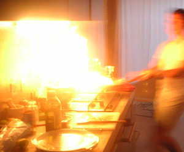

Gegrillter Seeteufel auf Schmorbohnen
6 von 6500 g Bohnen rüsten und waschen. In Olivenöl 3 Knoblauchzehen, eine getrocknete Chili swoie eine kleine Dose Sardellen andämpfen. Die Bohnen beigeben und mit 1.5 Dosen Pelatti ablöschen. Einen Zweig Rosmarin dazugeben und das ganze bei kleiner Hitze kochen bis die Bohnen gar sind, abschmecken und beiseite Stelle. Pro Person ca. 200 g Seeteufel mit Olivenöl bestreichen und bei starker Hitze scharf anbraten (siehe Bild). Alles abschmecken und mit einer Gremolata (Fein gehackte Peterli, Knoblauch und Zitronenschale) servieren.
